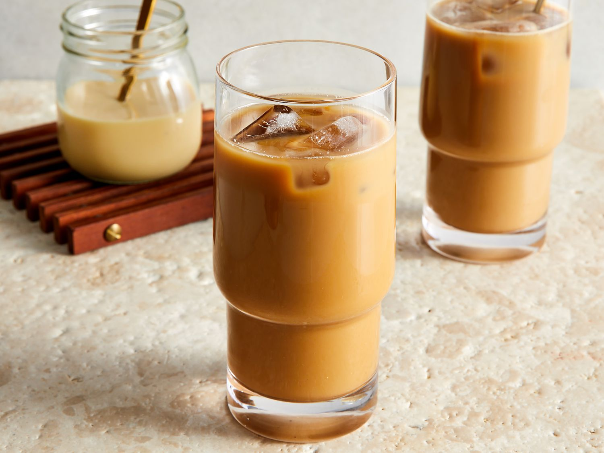

Vietnamese Coffee
Home

What is Vietnamese coffee?
Both strong and tasty, Vietnamese coffee is a popular staple in Asian stores, restaurants, and cafes worldwide.
Ingredients
- 4 cups water
- ½ cup dark roast ground coffee beans
- ½ cup sweetened condensed milk, divided
- 16 ice cubes
Steps
- Brew water with coffee using your preferred method to make coffee.
- Spoon 2 tablespoons sweetened condensed milk into each of 4 coffee cups.
- Pour 1 cup fresh hot coffee into each cup and stir to dissolve the milk.
- Serve cups of coffee along with 4 tall glasses filled with 4 ice cubes each and a long-handled spoon.
- Pour hot coffee over ice cubes and stir briskly with the long-handled spoon to chill the coffee.